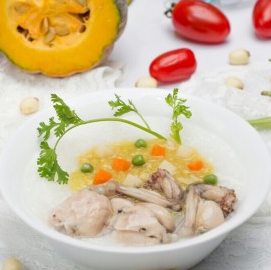

Thực đơn hằng ngày
Cháo cá hồi
Các mẹ đang suy nghĩ sáng nay nên vào bếp chế biến món ăn gì cho gia đình mình cùng thưởng thức thì gợi ý cách nấu cháo cá hồi của chúng tôi sẽ rất hữu ích nhé. Thay vì những bữa sáng ra hàng quán để ăn sáng, nay bạn có thể sử dụng cá hồi nguồn thực phẩm có chứa nhiều protein, omega - 3 để chế biến cho gia đình những chén cháo cá hồi hấp dẫn. Không hề tốn thời gian vào bếp đâu nhé nhưng vẫn có thể chế biến cho gia đình một món ăn lạ miệng.
Thành phần dinh dưỡng
Omega-3 (3,1g / 100g)
Protein (18,5g / 100g)
Vitamin A (7,1 microgram / 100g)
Vitamin nhóm B (4 microgram Vitamin B12 / 100g)
Vitamin D (8,6 microgram / 100g)
Selen
Kali (369mg / 100g)
Mô tả
Chúng ta đều nghe nói rằng cá hồi là một trong những loài cá vô cùng bổ dưỡng. Vậy chính xác, cá hồi bao gồm các thành phần dinh dưỡng nào, với hàm lượng dinh dưỡng là bao nhiêu?
Omega-3 (3,1g / 100g)
Theo trang trại cá hồi NORGE danh tiếng tại Na Uy, các nghiên cứu khẳng định rằng cá hồi chính là một trong những loài cá chứa hàm lượng axit béo Omega-3 cao nhất.
Nghe từ “axit béo” có vẻ không mấy thiện cảm, nhưng thực tế, Omega-3 rất có ích cho cơ thể trong việc giảm thiểu nguy cơ mắc các bệnh về tim mạch. Đối với trẻ nhỏ, Omega-3 giúp phát triển não bộ. Ngoài ra, Omega-3 còn giúp cải thiện tình trạng của các bệnh nhận trầm cảm và mất trí nhớ.
Protein (18,5g / 100g)
Cá hồi rất giàu protein, giúp xây dựng cơ bắp, xương và các mô da trên cơ thể (nhất là khi cơ thể có vết thương cần được lành lại).
Vitamin A (7,1 microgram / 100g)
Không chỉ cải thiện thị lực, vitamin A còn giúp trẻ nhỏ mau chóng phát triển thể chất. Vitamin A cũng có tác dụng làm cho làn da đẹp hơn, chống viêm và thậm chí là ngăn ngừa các căn bệnh ung thư với vai trò như một chất chống oxy hóa.
Hiệp hội Tim mạch Hoa Kỳ và Hội đồng Quản trị Nâng cao Sức khỏe khuyên chúng ta nên thường xuyên ăn cá, đặc biệt là các loài cá giàu chất béo có lợi như cá hồi ít nhất 2 lần/tuần.
Vitamin nhóm B (4 microgram Vitamin B12 / 100g)
Có nhiệm vụ đẩy mạnh quá trình trao đổi các chất như protein, carbon-hydrat và các chất béo rất hiệu quả, nhằm chuyển tải năng lượng từ thức ăn đến cơ thể. Vitamin nhóm B cũng giúp phát triển các tế bào thần kinh, DNA và các tế bào máu.
Vitamin D (8,6 microgram / 100g)
Giúp cơ thể hấp thụ canxi và phốt pho, nhằm mục đích hỗ trợ hệ miễn dịch và giúp xương, răng phát triển.
Selen
Có tác dụng hỗ trợ các chất chống oxy hóa trong cơ thể và thúc đẩy hệ miễn dịch. Đặc biệt, selen bảo vệ tế bào khỏi các tác động xấu từ môi trường, giúp ngăn ngừa bệnh tim và ung thư.
Kali (369mg / 100g)
Giúp cân bằng lượng dịch và chất khoáng trong và ngoài cơ thể. Ngoài ra, kali cũng có khả năng cân bằng huyết áp và giúp các cơ liên kết chặt chẽ với nhau.


-

CHÁO GÀ
-

CHÁO SƯỜN
-

CHÁO ẾCH
-

CHÁO LƯƠN
KHOAI MÔN -
CHÁO GÀ
-
CHÁO SƯỜN
-
CHÁO ẾCH
-
CHÁO LƯƠN
KHOAI MÔN